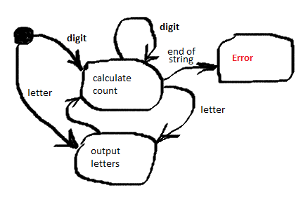
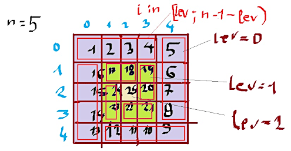
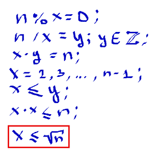

HomeIndexTODOЗадачи
HomeIndexTODOЗадачи GitHub
</>
GitHub
</>
3 Итоговые задачи
Даны два файла fruits.txt и animals.txt. Надо написать функцию, которая прочитает эти файлы и выведет их в консоль.
Яблоки
груши
сливы
мандарины. Животные
собака
кот
кабан def print_file(file_name):
with open(file_name, 'r', encoding = 'UTF-8') as f:
for line in f:
line = line.strip()
print(line)
print_file('fruits.txt')
print_file('animals.txt')Даны два файла fruits.txt и animals.txt. Надо написать функцию, которая прочитает эти файлы и пронумеровав их запишет в новый файл, а потом выведет его в консоль.
def enumerate_lines(file_name_list, output_file):
with open(output_file, 'w', encoding = 'UTF-8') as out_file:
i = 0
for fm in file_name_list:
with open(fm, 'r', encoding = 'UTF-8') as f:
for line in f:
i += 1
out_file.write(str(i) + '. ' + line.strip() + '\n')
enumerate_lines(['fruits.txt', 'animals.txt'], 'all.txt')
print_file('all.txt') 1. Яблоки
2. груши
3. сливы
4. мандарины.Написать функцию, которая принимает список чисел L и число x и возвращает Truесли
число x находится в списке L. А в противном случае False.
def list_contains(l,x):
for i in l:
if i == x:
return True
return False
print(list_contains([1, 2, 3], 2))
print(list_contains([1, 2, 3], 5))True
FalseУзнав, что ДНК не является случайной строкой, только что поступившие в Институт биоинформатики студенты группы информатиков предложили использовать алгоритм сжатия, который сжимает повторяющиеся символы в строке.
Кодирование осуществляется следующим образом: s = 'aaaabbсaa' преобразуется в 'a4b2с1a2', то есть группы одинаковых символов исходной строки заменяются на этот символ и количество его повторений в этой позиции строки.
Напишите программу, которая считывает строку, кодирует её предложенным алгоритмом и выводит закодированную последовательность на стандартный вывод. Кодирование должно учитывать регистр символов.
# s = input()
s = "aabccCCd"
print(f"s = {s}")
cp = ''
n = 0
res = ''
for c in s:
if cp == '':
cp = c
n = 1
elif c == cp:
n += 1
else:
res += cp + str(n)
cp = c
n = 1
if n > 0:
res += cp + str(n)
print(res)Эту же задачу можно выполнить используя словарь.
s = input().lower() # получаем строку для подсчета букв и форматируем методом в нижний регистр
d = {} # создаем пустой словарь для добавления встречающихся букв и мих количества
for i in s: # циклом проходимся по строке(берём каждую букву)
if i.isalpha(): # проверяем если это буква, то проверяем встречалась ли она, если да то к количеству прибавляем 1, иначе добавлем в словарь
d[i] = d.get(i, 0) + 1
print(d) {'z': 6, 'w': 3}Напишите программу, которая считывает из файла строку, соответствующую тексту, сжатому с помощью кодирования повторов, и производит обратную операцию, получая исходный текст.
print("---------- Расшифровка сжатого текста ----------")
def decode_file(input_file_name, output_file_name):
with open(output_file_name, 'w', encoding = 'UTF-8') as o:
with open(input_file_name, 'r', encoding = 'UTF-8') as i:
n = 0
a = ''
while True:
c = i.read(1)
if not c:
break
if c.isdigit():
n = n * 10 + int(c)
else:
for g in range(n):
o.write(a)
a = c
n = 0
for g in range(n):
o.write(a)
decode_file('dataset_3363_2 (5).txt', 'decoded.txt')
decode_file('test_encoded.txt', 'test_decoded.txt')
print_file('test_encoded.txt')
print_file('test_decoded.txt') На вход алгоритму подаётся строка, содержащая цифры и символы латинского алфавита. Эта строка разбивается на так называемые "серии", которые кодируются парой число-символ или просто символ (в таком случае число считается равным единице). Результат должен содержать эти серии в том же порядке, что они и встречаются в исходной строке, при этом каждая серия раскрывается в последовательность символов соответствующей длины.

Например, рассмотрим строку
3ab4c2CaB
Разобъём её на серии
3a b 4c 2C a B
После чего преобразуем серии и получим исходную закодированную строку:
aaabccccCCaB
def decode_str(inp):
n = 0
s = []
for c in inp:
if c.isdigit():
n = n * 10 + int(c)
else:
s.append((c * n) if n > 0 else c)
n = 0
if n > 0:
raise Exception('Строка завершилась цифрой') # Вызов исключения, выброс из условия
return ''.join(s)
print(decode_str(input()))Напишите функцию update_dictionary(d, key, value), которая принимает на вход словарь d и два
числа: key и value.
Если ключ key есть в словаре d, то добавьте значение valueв список, который хранится по этому
ключу. Если ключа key нет в словаре, то нужно добавить значение в список по ключу 2 * key.
Если и ключа 2 * key нет, то нужно добавить ключ 2 * key в словарь и сопоставить ему список из
переданного элемента [value].
def update_dictionary(d, key, value):
v = d.get(key)
if v is not None:
v.append(value)
else:
v = d.get(2 * key)
if v is not None:
v.append(value)
else:
d[2 * key] = [value]d = {2 : [1]}
print(d)
update_dictionary(d, 2, 2)
print(d)
update_dictionary(d, 1, 3)
print(d)
update_dictionary(d, 3, 4)
print(d) Функция отработав вернула:
{2: [1]}
{2: [1, 2]}
{2: [1, 2, 3]}
{2: [1, 2, 3], 6: [4]}Имеется файл с данными по успеваемости абитуриентов. Он представляет из себя набор строк, где в каждой строке записана следующая информация:
Фамилия;Оценка_по_математике;Оценка_по_физике;Оценка_по_русскому_языку
Поля внутри строки разделены точкой с запятой, оценки — целые числа.
Напишите программу, которая считывает исходный файл с подобной структурой и для каждого абитуриента записывает его среднюю оценку по трём предметам на отдельной строке, соответствующей этому абитуриенту, в файл с ответом.
Также вычислите средние баллы по математике, физике и русскому языку по всем абитуриентам и добавьте полученные значения, разделённые пробелом, последней строкой в файл с ответом.
В качестве ответа на задание прикрепите полученный файл со средними оценками по каждому ученику и одной строкой со средними оценками по трём предметам.
Примечание. Для разбиения строки на части по символу ';' можно использовать метод split следующим образом:
print('First;Second-1 Second-2;Third'.split(';'))
def average_marks(input_file_name, output_file_name):
with open(output_file_name, 'w', encoding='UTF-8') as o:
with open(input_file_name, 'r', encoding='UTF-8') as i:
n = 0
s1 = 0
s2 = 0
s3 = 0
while True:
l = i.readline() # Читает по одной строке
if not l:
break
n += 1
m = l.split(';')
m1 = int(m[1])
m2 = int(m[2])
m3 = int(m[3])
s1 += m1
s2 += m2
s3 += m3
o.write(str((m1 + m2 + m3) / 3) + '\n') # Выводит сроку с числами в файл
o.write(str(s1 / n) + ' ' + str(s2 / n) + ' ' + str(s3 / n)) Допустим, в файле input_marks.txt находится следующий текст:
Петров;85;92;78
Сидоров;100;88;94
Иванов;58;72;85Тогда при вызове функции:
average_marks('input_marks.txt', 'output_marks.txt')Будет создан файл output_marks.txt с содержимым:
85.0
94.0
71.66666666666667
81.0 84.0 85.66666666666667Напишите программу, которая запускается из консоли и печатает значения всех переданных аргументов на экран (имя скрипта выводить не нужно). Не изменяйте порядок аргументов при выводе.
Для доступа к аргументам командной строки программы подключите модуль sys и используйте переменную
argv из этого модуля. Можно использовать два способа:
from sys import argv
print(*argv[1:])>python program.py a b c
a b cfrom sys import argv
for i in range(1, len(argv)):
print(argv[i], end=' ')Результат такой же.
Выведите таблицу размером n × n, заполненную числами от 1 до n по спирали, выходящей
из левого верхнего угла и закрученной по часовой стрелке.
Схема решения:

# n = int(input())
n = 5
print(n)
m = [[0] * n for i in range(n)] # список с вложенными списками (1)
value = 0
for level in range(n // 2):
last = n - 1 - level
for i in range(level, last):
value += 1
m[level][i] = value
for j in range(level, last):
value += 1
m[j][last] = value
for i in range(last, level, -1):
value += 1
m[last][i] = value
for j in range(last, level, -1):
value += 1
m[j][level] = value
if n % 2 != 0:
k = n // 2
m[k][k] = value + 1
for r in m:
for E in r:
print(str(E).rjust(3, ' '), end=" ")
print()Результат выполнения:
5
1 2 3 4 5
16 17 18 19 6
15 24 25 20 7
14 23 22 21 8
13 12 11 10 9Примечание. Более подробную информацию о создании вложенных списков можно найти здесь.
Напишите программу, на вход которой подаётся список чисел одной строкой. Программа должна для каждого элемента этого списка вывести сумму двух его соседей. Для элементов списка, являющихся крайними, одним из соседей считается элемент, находящий на противоположном конце этого списка. Например, если на вход подаётся список "1 3 5 6 10", то на выход ожидается список "13 6 9 15 7" (без кавычек).
Если на вход пришло только одно число, надо вывести его же.
Вывод должен содержать одну строку с числами нового списка, разделёнными пробелом.
a = [int(i) for i in input().split()]
l = len(a)
if l == 1:
print(a[0])
else:
for i in range(l):
if i == 0:
print(a[1] + a[-1], end=' ')
elif i == l-1:
print(a[0] + a[l-2])
else:
print(a[i+1] + a[i-1], end=' ')Напишите программу, которая принимает на стандартный вход список игр футбольных команд с результатом матча и выводит на стандартный вывод сводную таблицу результатов всех матчей.
За победу команде начисляется 3 очка, за поражение — 0, за ничью — 1.
Формат ввода следующий:
В первой строке указано целое число n — количество завершенных игр.
После этого идет n строк, в которых записаны результаты игры в следующем формате:
Первая_команда;Забито_первой_командой;Вторая_команда;Забито_второй_командой
Вывод программы необходимо оформить следующим образом: Команда:Всего_игр Побед Ничьих Поражений Всего_очков
n = int(input())
d = {}
for i in range(n):
team1, s1, team2, s2 = input().split(';')
diff = int(s1) - int(s2)
result1 = d.setdefault(team1, [0, 0, 0, 0, 0])
result2 = d.setdefault(team2, [0, 0, 0, 0, 0])
result1[0] += 1
result2[0] += 1
if diff > 0:
result1[1] += 1
result1[4] += 3
result2[3] += 1
elif diff < 0:
result2[1] += 1
result2[4] += 3
result1[3] += 1
else:
result2[2] += 1
result2[4] += 1
result1[2] += 1
result1[4] += 1
for key, value in d.items():
print(key + ':' + ' '.join(map(str, value))) # объединение списка в строкуВходные данные:
3
Спартак;9;Зенит;10
Локомотив;12;Зенит;3
Спартак;8;Локомотив;15< 03_07_football_input.txt
Спартак:2 2 0 0 6
Зенит:2 1 0 1 3
Локомотив:2 0 0 2 0Напишите программу, которая умеет шифровать и расшифровывать шифр подстановки. Программа принимает на вход две строки одинаковой длины, в первой строке записаны символы исходного алфавита, во второй строке — символы конечного алфавита, после чего идёт строка, которую нужно зашифровать переданным ключом, и ещё одна строка, которую нужно расшифровать.
from io import StringIO
def crypt(string, d_crypt):
result = StringIO()
for i in string:
result.write(d_crypt[i])
return result.getvalue()
d_encrypt = {}
d_decrypt = {}
for c1, c2 in zip(input(), input()):
d_encrypt[c1] = c2
d_decrypt[c2] = c1
print(crypt(input(), d_encrypt))
print(crypt(input(), d_decrypt)) Note
В данной задаче мы используем объект StringIO для более эффективного формирования строки.
Более подробно см. здесь.
Входные данные:
abcd
*d%#
abacabadaba
#*%*d*%>python crypting.py < crypting_input.txt
*d*%*d*#*d*
dacabacПростейшая система проверки орфографии может быть основана на использовании списка известных слов. Если введённое слово не найдено в этом списке, оно помечается как "ошибка".
Попробуем написать подобную систему.
На вход программе первой строкой передаётся количество d известных нам слов, после чего на d строках указываются эти слова. Затем передаётся количество l строк текста для проверки, после чего l строк текста.
Выведите уникальные "ошибки" в произвольном порядке. Работу производите без учёта регистра.
d = set()
for _ in range(int(input())):
d.add(input().lower())
errors = set()
for _ in range(int(input())):
for w in input().lower().split():
if w not in d:
errors.add(w)
for e in errors:
print(e)Входные данные:
4
champions
we
are
Stepik
3
We are the champignons
We Are The Champions
Stepicchampignons
the
stepicНаписать программу, которая выведет точку, в которой окажется черепашка после всех команд. Для простоты они решили считать, что движение начинается в точке (0, 0), и движение на восток увеличивает первую координату, а на север — вторую.
Программе подаётся на вход число команд n, которые нужно выполнить черепашке, после чего n строк
с самими командами. Вывести нужно два числа в одну строку: первую и вторую координату конечной точки
черепашки. Все координаты целочисленные.
x = 0
y = 0
f = {'север': lambda n: (x, y + n),
'юг': lambda n: (x, y - n),
'запад': lambda n: (x - n, y),
'восток': lambda n: (x + n, y)
}
for _ in range(int(input())):
dir, n = input().split()
x, y = f[dir](int(n))
print(x, y) Note
lambda-выражения описаны здесь.
Решение 2:
x = 0
y = 0
f = {'север': (0, 1),
'юг': (0, -1),
'запад': (-1, 0),
'восток': (1, 0)
}
for _ in range(int(input())):
dir, n = input().split()
n = int(n)
k1, k2 = f[dir]
x += k1 * n
y += k2 * n
print(x, y) Входные данные:
4
север 10
запад 20
юг 30
восток 40>python coordinates_1.py < coordinates_input.txt
20 -20Дан файл с таблицей в формате TSV с информацией о росте школьников разных классов.
Напишите программу, которая прочитает этот файл и подсчитает для каждого класса средний рост учащегося.
Файл состоит из набора строк, каждая из которых представляет собой три поля: Класс Фамилия Рост
Класс обозначается только числом. Буквенные модификаторы не используются. Номер класса может быть от 1 до 11 включительно. В фамилии нет пробелов, а в качестве роста используется натуральное число, но при подсчёте среднего требуется вычислить значение в виде вещественного числа.
Выводить информацию о среднем росте следует в порядке возрастания номера класса (для классов с первого по одиннадцатый). Если про какой-то класс нет информации, необходимо вывести напротив него прочерк.
def height_statistics(input_file_name):
c = [[0] * 2 for i in range(12)]
with open(input_file_name, 'r', encoding = 'UTF-8') as f:
for line in f:
i, _, h = line.strip().split('\t')
i = int(i)
h = float(h)
c[i][0] += 1
c[i][1] += h
return c
def print_statistics(stats, output_file_name):
with open(output_file_name, 'w', encoding = 'UTF-8') as f:
for i in range(1, len(stats)):
n, h = stats[i]
f.write(str(i) + ' ' + (str(h / n) if n > 0 else '-') + '\n')
stats = height_statistics('dataset_3380_5 (2).txt')
print_statistics(stats, 'average_height_output.txt')Входные данные:
11 Dyson 171
10 Sykes 169
2 Morrison 131
10 Gilmore 169
11 Foster 173
9 Baldwin 173
7 Vance 165
9 Tracey 174
7 Mercer 156
10 Wallace 173
6 Tracey 153
9 Adderiy 171
5 Mathews 150После вызова функции, которая выполнила свое действие и записала ответ в файл, мы можем просмотреть
этот файл в консоли набрав команду type и имя файла.
>type average_height_output.txt
1 125.33333333333333
2 131.5
3 133.0
4 139.0
5 147.2
6 153.0
7 160.14285714285714
8 170.0
9 171.33333333333334
10 168.8
11 174.16666666666666Напишите простой интерпретатор математического выражения.
На вход подаётся строка с выражением, состоящим из двух чисел, объединённых бинарным оператором:
a operator b, где вместо operator могут использоваться следующие слова: plus, minus, multiply,
divide для, соответственно, сложения, вычитания, умножения и целочисленного деления.
Формат ввода:
Одна строка, содержащая выражение вида a operator b, 0 ≤ a, b ≤ 1000. Оператор может
быть plus, minus, multiply, divide.
Формат вывода: Строка, содержащая целое число -−- результат вычисления.
Sample Input 1:
45 plus 8
Sample Output 1:
53
arg1 = 0
arg2 = 0
d = {'plus': lambda arg1, arg2 :arg1 + arg2,
'minus': lambda arg1, arg2 :arg1 - arg2,
'multiply': lambda arg1, arg2 :arg1 * arg2,
'divide': lambda arg1, arg2 :arg1 // arg2
}
arg1, op, arg2 = input().split()
print(d[op](int(arg1), int(arg2)))Напишите программу, которая определяет, являются ли три заданных числа (в указанном порядке) последовательными членами арифметической прогрессии.
На вход программе подаются три числа, каждое на отдельной строке.
Программа должна вывести «YES» или «NO» (без кавычек) в соответствии с условием задачи.
def is_range(sek):
if len(sek) < 3:
return 'NO'
delta = sek[1] - sek[0]
for i in range(2, len(sek)):
if sek[i]- sek[i - 1] != delta:
return 'NO'
return 'YES'
sek = int(input()),int(input()),int(input())
print(is_range(sek))Входные данные:
2
4
8NOНа вход программе подается число n – количество собачьих лет. Напишите программу, которая
вычисляет возраст собаки в человеческих годах.
На вход программе подаётся натуральное число – количество собачьих лет.
Программа должна вывести возраст собаки в человеческих годах.
Примечание. В течение первых двух лет собачий год равен 10.5 человеческим годам. После этого каждый год собаки равен 4 человеческим годам.
age = float(input())
if 0 < age <= 2:
print(age * 10.5)
elif age > 2:
print("{:.0f}".format(21 + (age - 2) * 4)) # форматирование (ответ без нуля после точки)
Напишите функцию is_prime(num), которая принимает в качестве аргумента натуральное число и возвращает значение True если число является простым и False в противном случае.
Для проверки чисел достаточно проверить только числа до квадратного корня из N. Если делитель не обнаружился, то число будет простым. Таким образом мы уменьшаем время работы функции.
def is_prime(num):
if num == 1:
return False
for i in range(2, int(num ** 1/2)):
if num % i == 0:
return False
return True
# считываем данные
n = int(input())
# вызываем функцию
print(is_prime(n))Чтобы найти следующее просто число мы используем предыдущую функцию is_prime:
def get_next_prime(num):
num += 1
while not is_prime(num):
num += 1
return num